The slide of the lecture is on the left, the same figure or table on the right, computed in the browser from the same data. The ▶ button moves the parameter step by step; the “Worked example” boxes redo the calculation with the numbers of the chapter.
Short and long memory · Fractional differencing · The ARFIMA(p,d,q) model · Estimating d · Forecasting with ARFIMA · Long memory in volatility · Spurious long memory
Short and long memory
Four persistent series
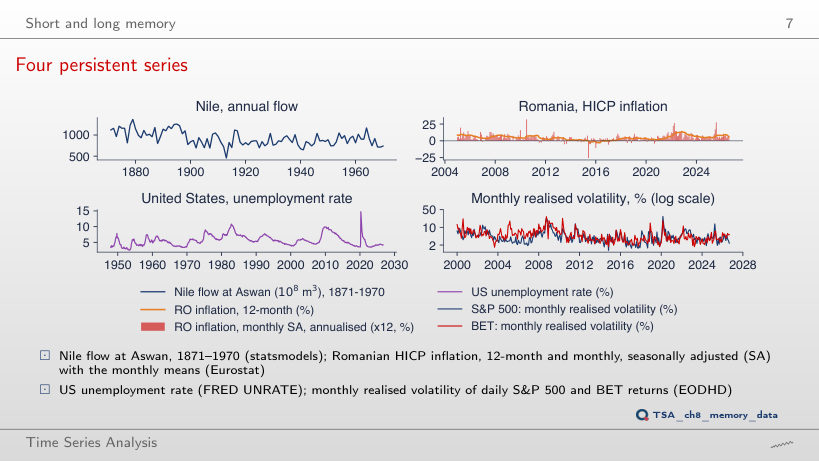
Answer
106 months, almost nine years; the Nile stays 11 years on one side of its mean, Romanian 12-month inflation 103 months. For a series without memory such long runs would be very rare.
Sample ACF against an AR(1)
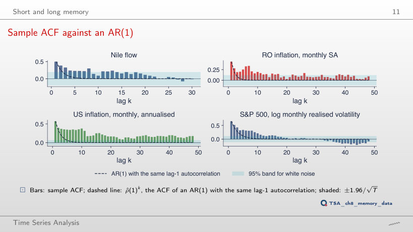
Answer
11 of 48, against 48 of 48 on 1947–2026; ρ̂(10) falls from 0.38 to 0.16. Much of the memory of the full series comes from the 1970s and early 1980s.
Hyperbolic against exponential decay
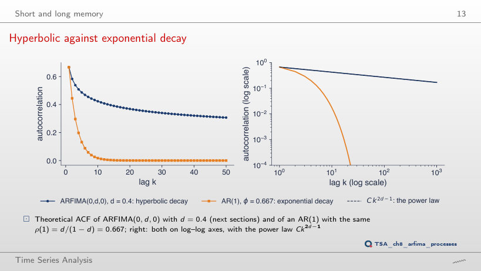
Answer
0.064 against 9.5 · 10⁻⁷. With a small d the hyperbolic tail is low, but still five orders of magnitude above the exponential one.
Interpreting the two decay laws
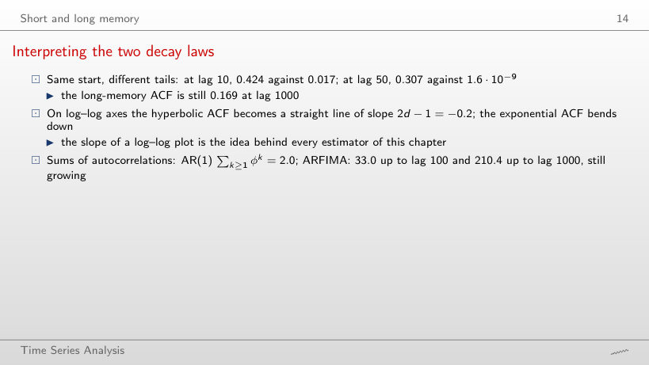
Worked example
Answer
14 times: 1.74 against 0.125. Even a weak long memory accumulates far more than a short memory with the same ρ(1).
Fractional differencing
Worked example: the weights of (1-L)^0.4
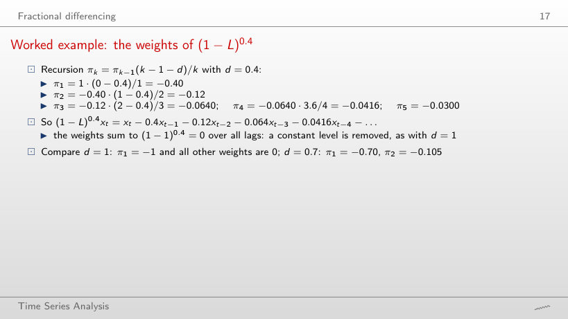
Worked example
Answer
π₁ = −1.5 and π₂ = −1.5 · (1 − 1.5)/2 = +0.375. For d > 1 the factor (k − 1 − d) is negative at k = 2, so the weights change sign after the first lag.
Fractional differencing and fractional integration
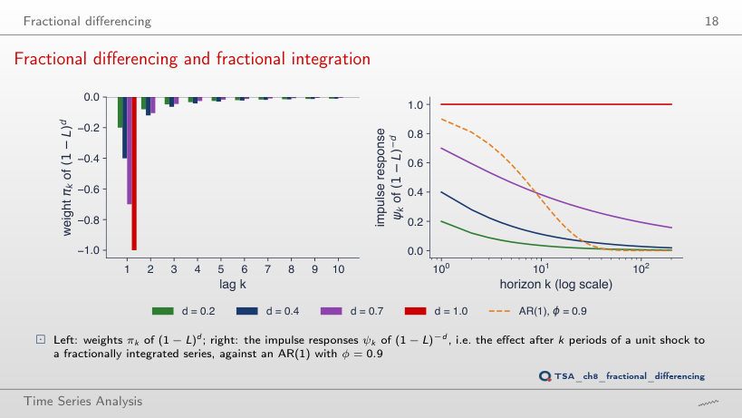
Answer
ψ₁₀₀ = 0.59 (0.74 after 10 periods), against 0.9¹⁰⁰ = 2.7 · 10⁻⁵ for the AR(1) with φ = 0.9. The series reverts to its mean, but very slowly.
The degree of differencing a price needs
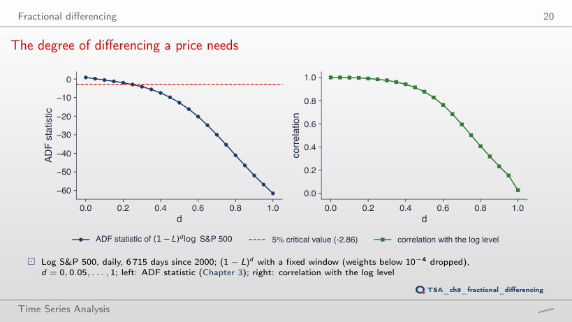
Answer
From d = 0.35, with 61 weights, against 0.25 with 445. The truncated weights no longer sum to 0, so the filter keeps part of the level and a larger d is needed for stationarity.
The ARFIMA(p,d,q) model
The parameter d: what each range means
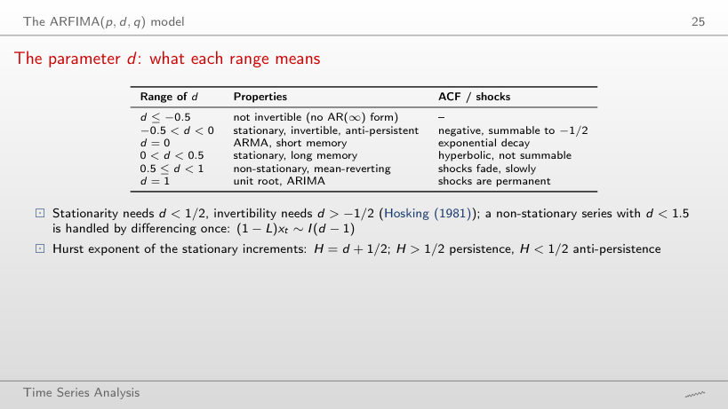
Answer
It is not stationary (d ≥ 0.5) but it reverts to its mean: ψ₁₀₀ = 0.11. The first difference is ARFIMA(0, −0.4, 0), anti-persistent with ρ(1) = −0.29.
Worked example: ARFIMA(0, 0.3, 0)
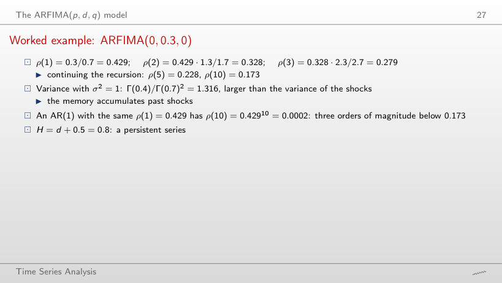
Worked example
Answer
ρ(1) = 0.818 and ρ(10) = 0.652; an AR(1) with the same ρ(1) has ρ(10) = 0.134. The variance rises to 3.64.
ARFIMA(0,d,0) with d = 0.4 and d = -0.4
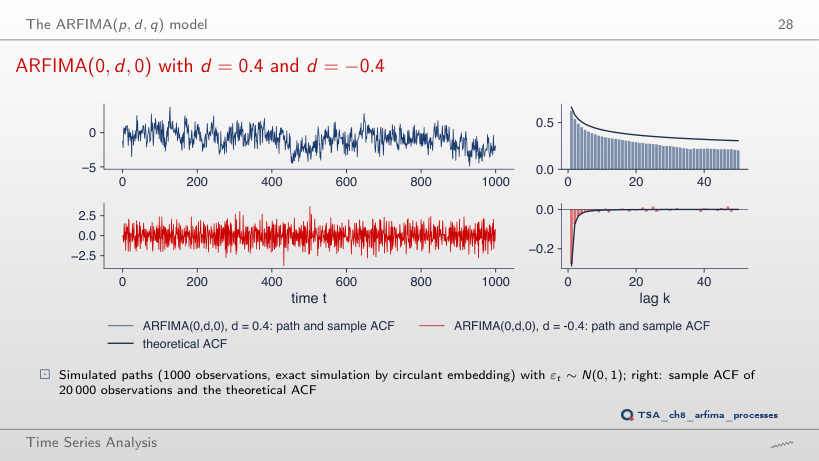
Answer
Γ(0.1)/Γ(0.55)² = 3.64. The variance of the 1000-observation path is only 2.31: the sample mean absorbs part of the slow component.
Fractional Brownian motion for three Hurst exponents
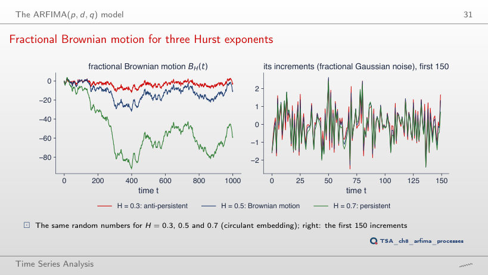
Answer
In theory 20.9 − 1 = 0.87, in the sample 0.72. With such strong persistence the mean of the 1000 increments absorbs part of the dependence, so the sample ACF is biased downwards.
Estimating d
The R/S statistic, step by step
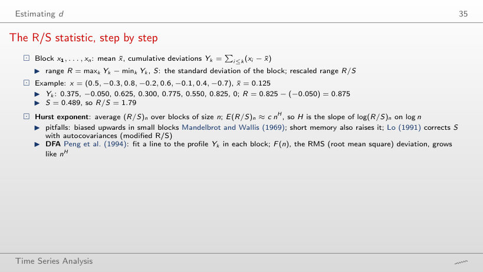
Worked example
Answer
The mean becomes 0.275, R = 0.575, S = 0.386, so R/S = 1.49 (against 1.79). One value changes the mean, hence all cumulative deviations.
R/S and DFA on three series
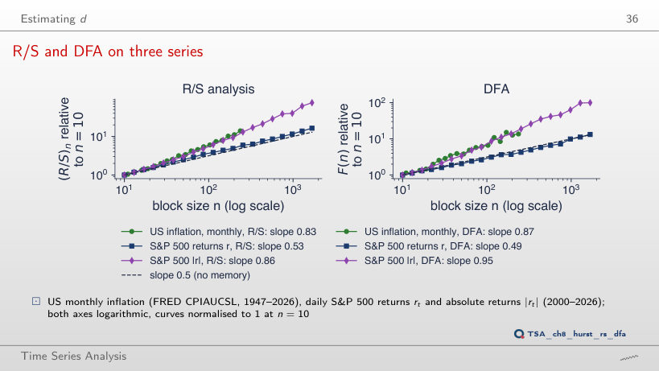
Answer
0.92, against 0.86 with n from 10; returns stay at 0.53. In small blocks the day-to-day noise of |rt| dominates; the persistent part shows in large blocks.
The periodogram and the GPH estimator
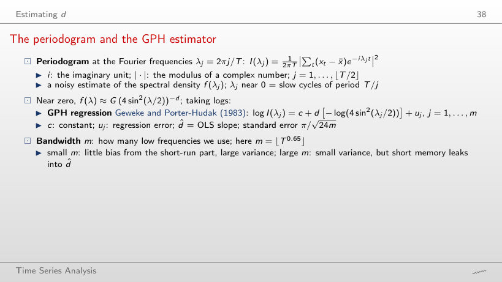
Worked example
Answer
d̂ = 0.56, SE 0.16. With fewer frequencies the estimate moves towards 0.5, and the standard error grows like 1/√m.
GPH regressions: the Nile and Romanian inflation
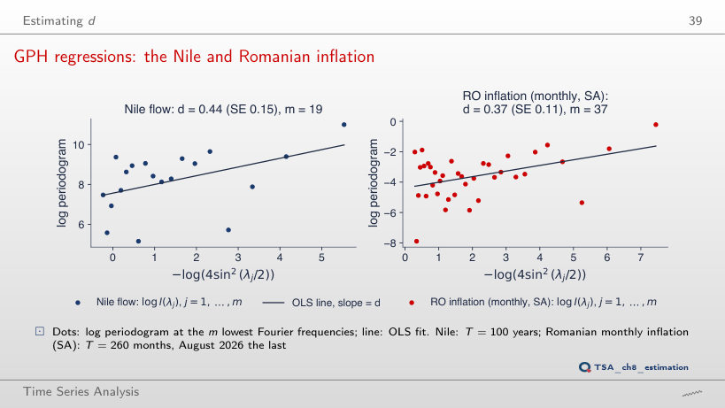
Answer
GPH 0.62 (SE 0.07), local Whittle 0.29 (SE 0.05). GPH works with log I, and the near-zero ordinates at the seasonal frequencies removed by the adjustment pull its slope up; local Whittle uses I itself and is not affected.
Interpreting the GPH regressions
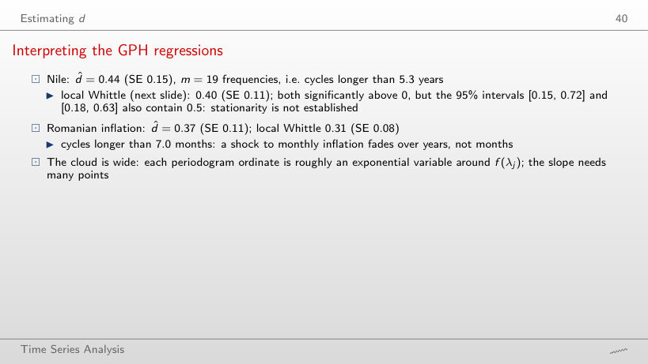
Answer
No: d̂ = 0.39, SE 0.20, interval [−0.01, 0.79]. With m = 10 GPH no longer separates d from 0; local Whittle [0.15, 0.77] still does.
The local Whittle estimator
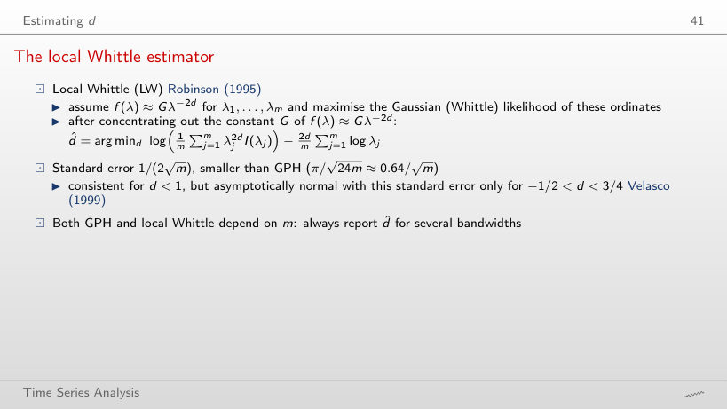
Worked example
Answer
No: d̂ = 0.91 > 3/4, outside the range of the normal approximation. The interval [0.80, 1.01] contains 1 anyway, so mean reversion is not established.
Sensitivity to the bandwidth
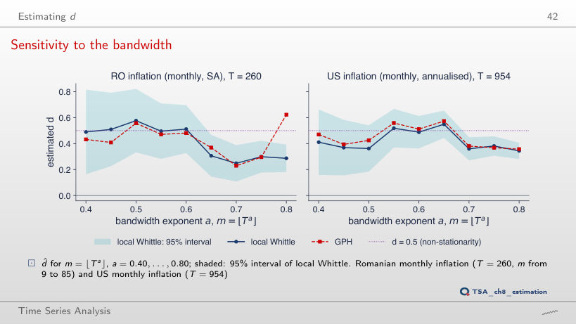
Answer
US: 0.35–0.54; Romania: 0.24–0.59. The conclusion of long memory stays, and the uncertainty of about ±0.15 is there without the years 2020–2026 too.
Monte Carlo: five estimators of d
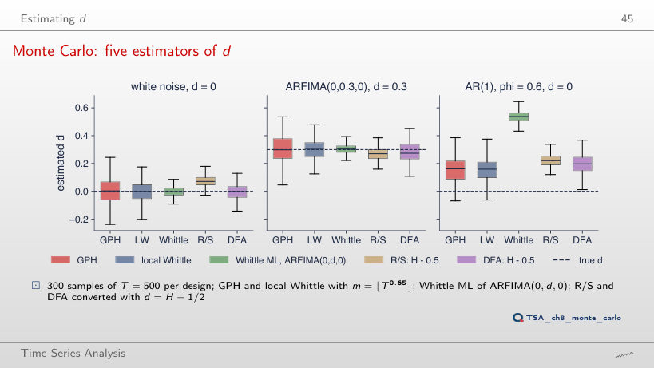
Answer
Whittle ML: standard deviation 0.033, against 0.076 (local Whittle) and 0.086 (GPH), the same order as with 300 replications (0.04, 0.08, 0.10).
Romanian inflation: ARMA or ARFIMA?
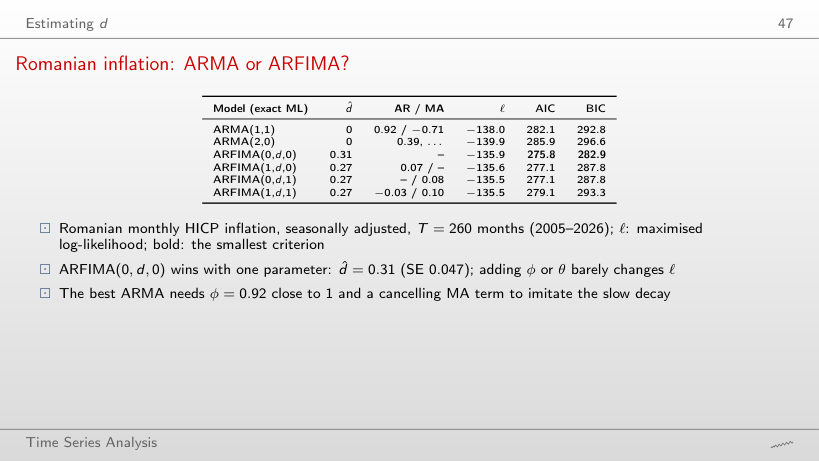
Answer
ARFIMA(0,d,0), with d̂ = 0.24: BIC 191.2 against 195.5 for ARMA(1,1). The conclusion of the lecture holds on the shorter sample too.
Romanian inflation: fitted autocorrelations
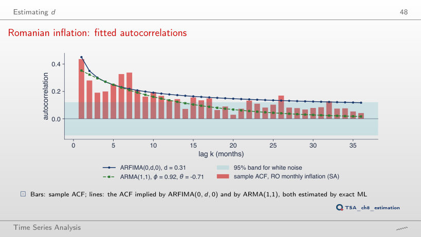
Answer
ℓ falls from −135.9 to −139.8; 2Δℓ = 7.8 > 3.84, so d = 0.45 is rejected at 5%. The ARFIMA curve becomes too high at lags 12 and 24 (0.65 and 0.60).
Long memory in twelve series
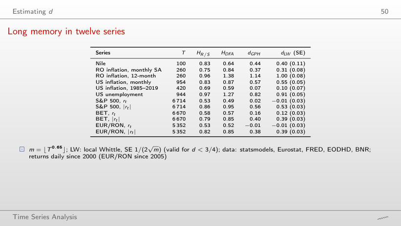
Answer
No: d̂ = 0.64, interval [0.46, 0.82], and the SE is valid (d̂ < 3/4). With a = 0.65 (m = 85): 0.91, [0.80, 1.01]. The verdict depends on the bandwidth.
Forecasting with ARFIMA
US inflation: ARFIMA and AR forecasts
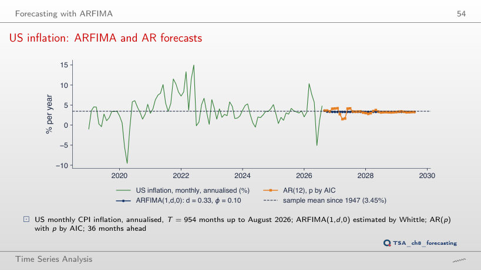
Answer
ARFIMA: 3.37 pp, against 4.02 pp for the AR(12). Both started high, but the AR(12) extended the 2022 peak (6.2% a year ahead, against 5.4%), and inflation fell faster.
Does long memory improve forecasts?
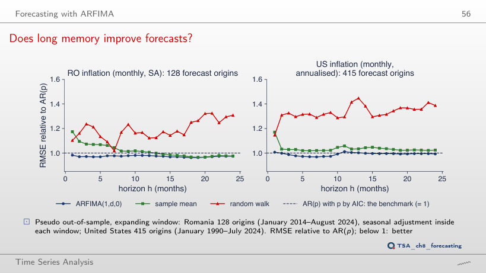
Answer
No: the ratio is 1.038 at 1 month (the AR is better), 0.999 at 12 and 0.976 at 24. The gain remains at the long horizons only.
Interpreting the forecast comparison
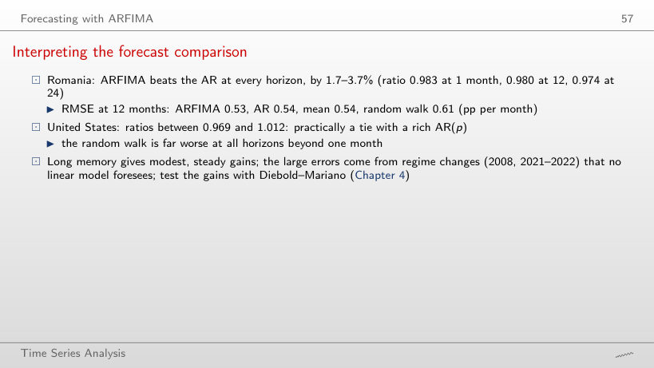
Answer
0.57 and 0.64 pp per month (against 0.53 and 0.61 on all origins): the random walk stays the worst.
Long memory in volatility
Returns, absolute and squared returns
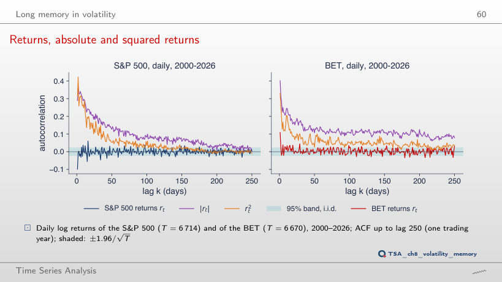
Answer
6 of 250 (against 227), and local Whittle 0.00. The shuffle keeps the distribution and destroys the order: the memory lies in the sequence of calm and turbulent days.
Monthly realised volatility: ARFIMA or ARMA?
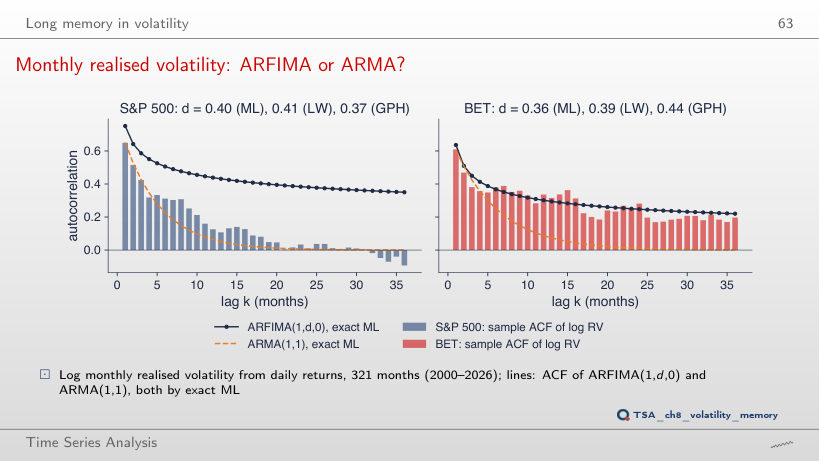
Answer
By 43.8 (BET) and 33.4 (S&P 500): both values are clearly rejected. For the BET the model ACF at lag 24 would be 0.004, against 0.28 in the sample.
Interpreting realised volatility
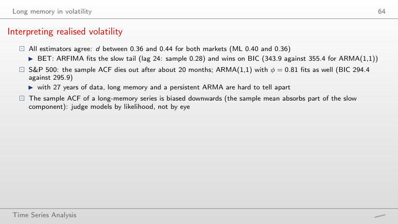
Answer
Between 0.36 (ML, BET) and 0.74 (GPH, BET), against 0.36–0.44 in the lecture. With few frequencies the semiparametric estimates scatter; ML does not depend on m.
FIGARCH and HAR
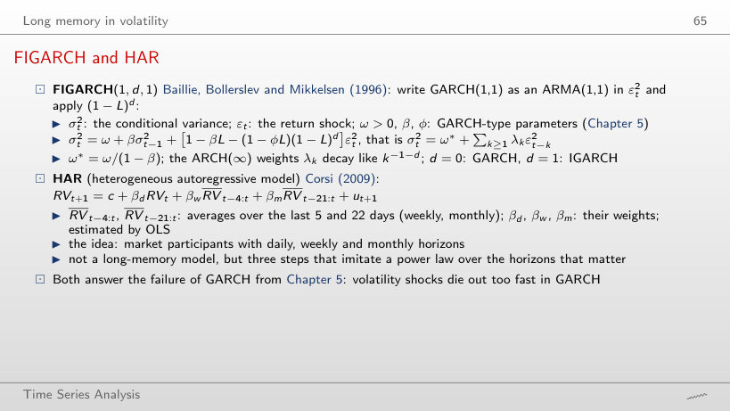
Worked example
Answer
The weekly one: β̂w = 0.62; β̂d = 0.10, half of 0.20 on 2000–2026.
FIGARCH against GARCH; HAR against (1-L)^d
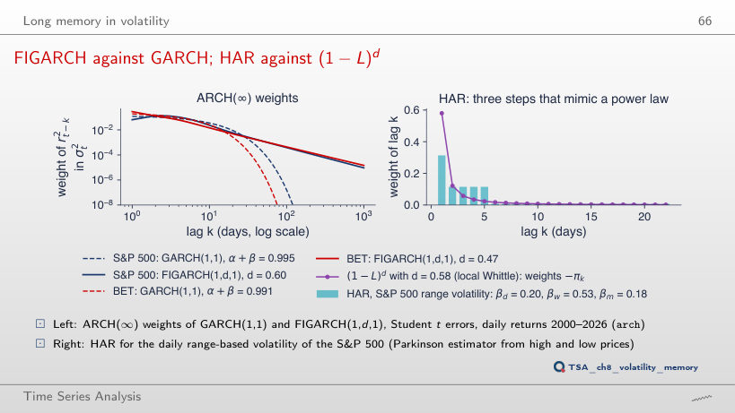
Answer
FIGARCH 2.9 · 10⁻⁵, GARCH 2.8 · 10⁻³¹. Even with α + β = 0.995 the GARCH weights fall exponentially; the FIGARCH weights fall like a power.
Interpreting FIGARCH and HAR
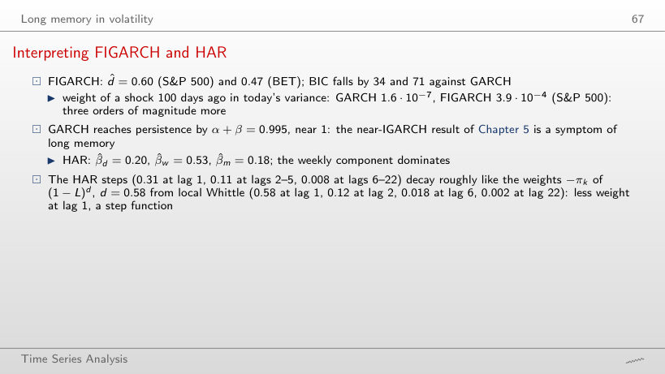
Answer
Lag 1: 0.88 against 0.31; lag 22: 0.0003 against 0.008. A larger d puts more weight on the first lag and less on the tail.
Spurious long memory
Short memory that looks long
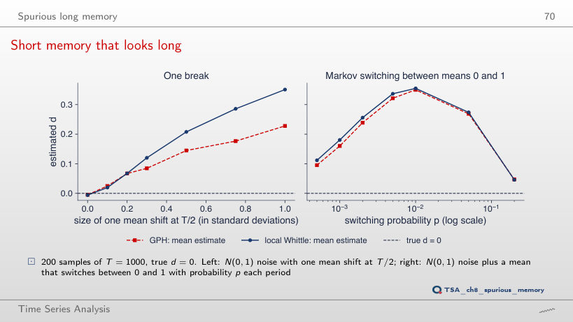
Answer
0.31, above the 95% quantile without a shift (0.07): the distributions do not overlap, so every one of the 200 samples with a break shows “long memory”.
The Nile in 1898: memory or a break?
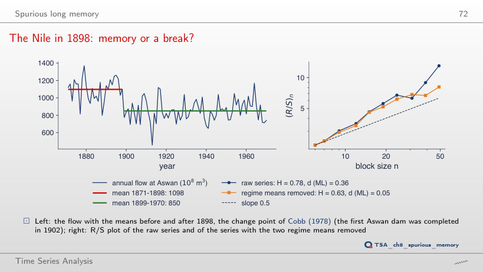
Answer
0.35, almost as in the raw series (0.36). A break placed in another year does not explain the memory; only the 1898 break brings it down to 0.05.
The stability of memory over time
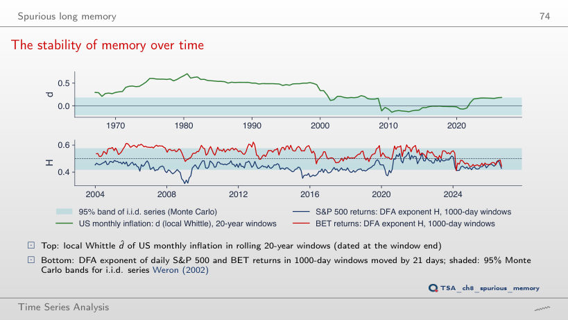
Answer
0.64 in the window ending July 1974, against 0.71 in July 1980 with 20-year windows; the band of no memory widens to [−0.33, 0.25].
Nile flow at Aswan, 1871–1970 (statsmodels). Romanian HICP inflation, monthly and 12-month (Eurostat prc_hicp_minr, January 2005 – August 2026). US CPI inflation (FRED CPIAUCSL, February 1947 – August 2026) and the unemployment rate (FRED UNRATE, January 1948 – September 2026). The BNR EUR/RON reference rate and the daily S&P 500 and BET prices (data/market, up to 18 September 2026). The FRED, Eurostat and BNR series are read with the chapter’s loaders (downloaded on 4 November 2026) and cut at the end dates of the slides; they reproduce the numbers of the lecture exactly. The R/S, DFA, GPH and local Whittle estimators, the exact likelihood, the HAR regression and fractional differencing are recomputed in the browser; the simulations use the draws of the chapter’s seed, and the Monte Carlo estimates, the out-of-sample forecast errors, the Whittle ARFIMA(1,d,0) fits and the model tables are those of the chapter code. Variants that do not appear in the lecture (another sample, another bandwidth, another forecast origin, other windows, another d) are extra runs of the chapter code with the same data and seed.